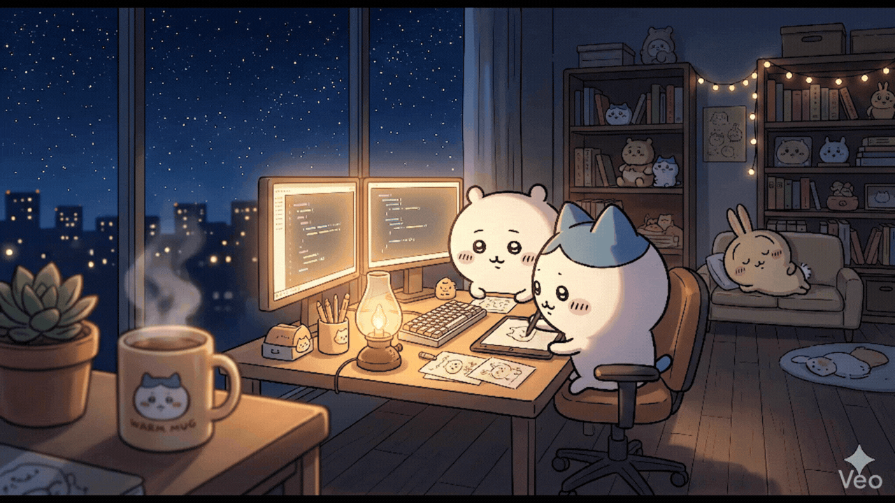

local_cafe
小八與吉伊 深夜lo-fi工作室
深夜lo-fi工作室
play_arrow
播放音樂
volume_down
volume_up
⏸ 已停止

🔴 陪伴加班
會松鼠語的高剛
send
timer
大家還能陪主播撐：
01:00:00
music_history
點播陪伴音樂
價格: $30
贊助
timer_10_alt_1
5分鐘加班費
價格: $50
贊助
update
10分鐘加班費
價格: $100
贊助
🚕
鹽酥雞、夜間計程車費
價格: $200
贊助
local_fire_department
深夜打氣牆
大家留下的溫暖都在這裡
目前牆上還是空的，來留下第一句鼓勵吧！